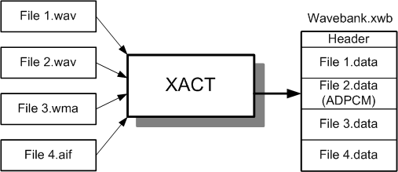
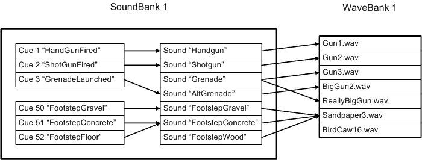
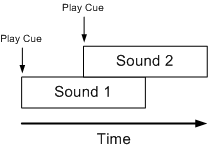
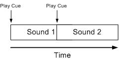
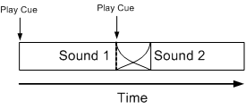
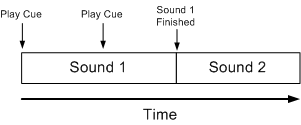

This section discusses general terms and concepts of the Xbox Audio Creation Tool (XACT) and provides more in-depth detail of streaming wave banks.
Working with XACT requires a working knowledge of some general terminology and concepts. This section discusses these terms as they apply to XACT.
Waves are PCM, ADPCM, AIF, AIFF, or WMA data files that are used as the basic materials for creating sounds. You can use any of several commercially available applications to create waves. For more information about wave file formats, see Wave Format Support on Xbox.
A wave bank is a collection of waves logically grouped into a single .xwb file by a sound designer. For example, user interface waves that are always resident in memory may be stored in one wave bank, while waves used for sound effects are stored in another. Furthermore, wave banks can be streaming or non-streaming. The sound designer may decide to group larger files, such as background music or ambient waves, into a streaming wave bank to reduce the audio memory footprint.

Note Wave banks that contain WMA wave files must be streaming wave banks. Also, because each WMA file played through the XACT API incurs a separate WMA decoding (done in software), you need to keep the number of concurrent WMA streams to a minimum. You can use all other wave file types in both streaming and non-streaming wave banks.
Sounds specify how one or more waves should be played. The wave file(s) can reside in one or more wave banks. A sound also has specific properties such as volume, DirectSound 3D rolloff, and Parametric EQ. These properties can be adjusted by the sound designer and auditioned on the Xbox hardware.
Cues are what programmers use to play sounds. (Sometimes playing a cue is called "triggering" a cue.) Cues are typically played when certain game events, such as footsteps or gunshots, occur. A cue has an associated sound, so when the cue is played (or triggered), the associated sound is heard.
By abstracting sounds from cues, a sound designer can easily re-assign sounds to a cue without programmer intervention. For example, a sound designer can try various gunshot sounds associated with a particular game event without requiring the programmer to change their code or constantly rename sounds.
A sound bank is a collection of sounds and cues logically grouped by the sound designer into a single .xsb file. A sound bank does not contain wave data. (That information resides exclusively in the associated wave bank(s).) Rather, a sound bank contains information about how to map cues to sounds, and sounds to wave data.
The following image is an example mapping:

Groups offer a convenient way for the sound designer to view and set properties of sounds. A sound designer might, for example, group sounds by character, level, and so on for easy reference and editing. Groups are available as a convenience for the sound designer and are not used by the programmer.
Categories are also set by the sound designer. Programmers can use the XACT API to change the relative volumes of different categories individually—for example, if a title allows the user set the relative volumes for Music, Sound Effects, and Voice. XACT supports up to 255 categories.
Layers are different from groups or categories. Layers help specify how different sounds interact with one another. For example, by placing sounds on the same layer, a sound designer can specify that one piece of music stop when another piece starts. Likewise, a sound designer can specify cross-fade parameters on a per-layer basis.
The following example shows the interaction that results when sounds reside on separate layers.

By default, sounds cut one another off when they reside on the same layer, as this next example shows.

For sounds on the same layer, you can specify linear and logarithmic fade in/out, as in this example.

You can also queue sounds for sequential playback, as in the following example.

This section discusses streaming wave banks and how to use them under different circumstances.
The main differences between streaming wave banks from DVD and the hard disk are latency (hard disk seek time) and throughput. The hard disk is much faster and has greater throughput than the DVD drive. This is useful when streaming a large number of sounds with low latency. DVDs have a much larger storage capacity than the utility partition on the hard disk, so DVDs can hold larger wave banks.
It is important to keep all sounds in a single wave bank that will be played concurrently from DVD or the hard disk. Keeping all the data in the same wave bank means the various waves are physically close to each other on the source media, so latency is minimized.
One of the biggest problems associated with console audio is fitting all the desired sounds within the memory footprint allocated by the game. Typically, this footprint is just a few megabytes, so to fit all the sounds in memory, a sound designer either down-samples or compresses the sounds, or both. These actions can reduce the fidelity of the sounds.
The XACT solution to this problem is zero-latency streaming, sometimes called primed streaming. Zero-Latency streaming allows a sound designer to create a large wave bank, tens of megabytes or larger. The wave bank itself is copied to the utility cache partition of the Xbox hard disk. For each of the waves in the wave bank, only a small amount of the beginning of the sound is loaded into system RAM; the rest remains on the Xbox hard disk. When the wave is played, it can be played with zero latency, because the beginning of the sound is stored in system RAM. As it plays, XACT asynchronously streams the rest of the sound, using only small buffers, on the order of 10–20 KB. The Xbox can handle over 100 concurrent streams off the hard disk. So by using this technique, a sound designer can have zero-latency access to large wave banks, with only a small system RAM footprint.
Zero-latency streaming is possible from the DVD, but is not recommended. Because the DVD has a much higher latency than the hard disk, each sound requires a greater amount of system RAM. Also, it is not possible to have as many concurrent streams.
How much RAM a particular streaming wave uses depends on two things: the format of the sound and a particular programmer API setting (the dwPacketSizeInMilliSecs member of the XACT_WAVEBANK_STREAMING_PARAMETERS structure). A non-looping sound uses three buffers; a looping sound uses four. The size of each buffer is specified in dwPacketSizeInMilliSecs; the number of bytes in a packet depends on the format. The packet size is then rounded up to the "sector size" (512 bytes for hard disk wave banks, 2048 bytes for DVD).
Example
Sound format, 44.1-kHz Mono, 16-bit, non-looping, dwPacketSizeInMilliSecs = 25 ms
RAM for one buffer = 44,100 (samples per second) * 2 (bytes per sample) * 0.025 (25-ms buffer) = 2205 bytes (rounded up to 2560)
Non-looping sound uses 3 buffers, so 3 * 2560 = 7680 bytes.
Notice that the amount of system RAM required does not depend on the length of the sound. It depends only on the format and the value specified in dwPacketSizeInMilliSecs.
Example
Zero-latency wave bank with 200 44.1-kHz 16-bit looping entries, and dwPacketSizeInMilliSecs of 25ms
Average wave size length: 3 seconds: Wave bank size approximately 52 MB
RAM usage for one buffer: 2560 bytes
4 buffers per sound = 10,240 bytes per sound
40 concurrent sounds * 10,240 bytes per sound = 409 KB
As demonstrated in the previous example, XACT can provide zero-latency access to 52 MB of 44.1-kHz/16-bit audio data, using less than 500 KB of system RAM.
It is possible to use ADPCM in zero-latency streaming wave banks, but there are side effects. Due to a quirk in the interaction between the ADPCM decoder and the hard disk alignment restrictions, an ADPCM zero-latency buffer must be a multiple of about 18 KB. Because you have three (or four) buffers per sound, that is almost 60 KB. Yes, ADPCM will take up more RAM than linear PCM! Of course, ADPCM wave banks will require less hard disk space than corresponding PCM wave banks.
The XACT engine properly streams ADPCM waves only where the loop region is the size of the play region. In other words, the entire ADPCM wave can be looped when streaming, but not parts of it. ADPCM waves with arbitrary loop regions may not be sector aligned and are therefore not supported with streaming.
If you need arbitrary loop points, you have two possible options.
Again, this restriction applies only when looping streaming ADPCM wave data.
Generally, if your title has a large number of speech phrases, it is best to place them all in one large DVD streaming wave bank. This gives moderate latency access (around 100 ms or so), and the phrases never need to be copied to the hard disk.
In some cases, you may need to synchronize the speech with animations. This can be difficult without knowing the exact latency of a given DVD-streamed sound. XACT provides two ways to address this problem.
For more information about XACT, see the following topics.